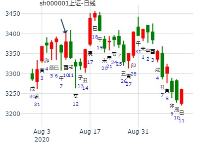

占事: 3月21--25大盘走势卦 起卦方式：手工指定
公历时间：2011年3月21日
干支：辛卯年 辛卯月 乙亥日 庚辰时 (旬空: 申酉 )
地火明夷(游魂) 火天大有(归魂)
玄武 ▅▅ ▅▅ 父母酉金 Ｘ→ ▅▅▅▅▅ 妻财巳火 应
白虎 ▅▅ ▅▅ 兄弟亥水 ▅▅ ▅▅ 官鬼未土
腾蛇 ▅▅ ▅▅ 官鬼丑土 世Ｘ→ ▅▅▅▅▅ 父母酉金
勾陈 妻财午火▅▅▅▅▅ 兄弟亥水 ▅▅▅▅▅ 官鬼辰土 世
朱雀 ▅▅ ▅▅ 官鬼丑土 Ｘ→ ▅▅▅▅▅ 子孙寅木
青龙 ▅▅▅▅▅ 子孙卯木 应 ▅▅▅▅▅ 兄弟子水
应卯得太岁月令，大旺，可惜日令合之
三个阴爻动而变阳，有三个大阳线
高点可达3030， 忽悠忽悠中，据此投资自负！
占事：上证午月走势？
起卦方式：手动摇卦 易经股市论坛-在线排盘系统
公历时间：2014年6月6日11时43分
干支：甲午年 庚午月 戊申日 戊午时 旬 空：辰巳 戌亥 (寅卯) 子丑
地火明夷(游魂) 火天大有(归魂)
朱雀 ▅▅ ▅▅ 父母酉金 Ｘ→ ▅▅▅▅▅ 妻财巳火 应
青龙 ▅▅ ▅▅ 兄弟亥水 ▅▅ ▅▅ 官鬼未土
玄武 ▅▅ ▅▅ 官鬼丑土 世Ｘ→ ▅▅▅▅▅ 父母酉金
白虎 妻财午火▅▅▅▅▅ 兄弟亥水 ▅▅▅▅▅ 官鬼辰土 世
腾蛇 ▅▅ ▅▅ 官鬼丑土 Ｘ→ ▅▅▅▅▅ 子孙寅木
勾陈 ▅▅▅▅▅ 子孙卯木 应 ▅▅▅▅▅ 兄弟子水
主帖标题: 占002552此股现在至年底的走势,请帮忙解卦,
出生年：1981年 性别：女
占事: 占002552此股7月7日－7月11日的走势
起卦方式：手动摇卦 周易天地排盘系统
公历时间：2014年7月5日9时58分
干支：甲午年 庚午月 丁丑日 乙巳时 旬空：辰巳 戌亥 申酉 寅卯
神煞：驿马─亥 桃花─午 日禄─午 贵人─酉，亥
坎宫：地火明夷（游魂） 乾宫：火天大有（归魂）
青龙 ▄▄ ▄▄ 父母癸酉金 X-> ▄▄▄▄▄ 妻财己巳火 应
玄武 ▄▄ ▄▄ 兄弟癸亥水 ▄▄ ▄▄ 官鬼己未土
白虎 ▄▄ ▄▄ 官鬼癸丑土 世X-> ▄▄▄▄▄ 父母己酉金
螣蛇 妻财戊午火 ▄▄▄▄▄ 兄弟己亥水 ▄▄▄▄▄ 官鬼甲辰土 世
勾陈 ▄▄ ▄▄ 官鬼己丑土 X-> ▄▄▄▄▄ 子孙甲寅木
朱雀 ▄▄▄▄▄ 子孙己卯木 应 ▄▄▄▄▄ 兄弟甲子水
主帖标题: 8.13大盘
出生年：年 性别：女 占事: 8.13 起卦方式：手工指定
公历时间：2010年8月11日8时56分
干支：庚寅年 甲申月 癸巳日 丙辰时
旬空：午未 午未 午未 子丑
神煞：驿马─亥 桃花─午 日禄─子 贵人─巳，卯
坎宫：地火明夷（游魂） 乾宫：火天大有（归魂）
白虎 ▄▄ ▄▄ 父母癸酉金 X-> ▄▄▄▄▄ 妻财己巳火 应
螣蛇 ▄▄ ▄▄ 兄弟癸亥水 ▄▄ ▄▄ 官鬼己未土
勾陈 ▄▄ ▄▄ 官鬼癸丑土 世X-> ▄▄▄▄▄ 父母己酉金
朱雀 妻财戊午火 ▄▄▄▄▄ 兄弟己亥水 ▄▄▄▄▄ 官鬼甲辰土 世
青龙 ▄▄ ▄▄ 官鬼己丑土 X-> ▄▄▄▄▄ 子孙甲寅木
玄武 ▄▄▄▄▄ 子孙己卯木 应 ▄▄▄▄▄ 兄弟甲子水
月卦：2020申月（8-7至9-6）上证指数涨跌趋势预测，唱反调的来了！
姓名：姓名姓名 男 占事:申月走势？
起卦方式：鼠标手动摇卦 (周易世界 www.zhouyiworld.com)
公历时间：2020年8月9日3时0分
干 支：庚子年 甲申月 甲申日 丙寅时
旬 空：辰巳 午未 午未 戌亥
坎宫：地火明夷（游魂） 乾宫：火天大有（归魂）
玄武 ▄▄ ▄▄ 父母癸酉金 X-> ▄▄▄▄▄ 妻财己巳火 应
白虎 ▄▄ ▄▄ 兄弟癸亥水 ▄▄ ▄▄ 官鬼己未土
螣蛇 ▄▄ ▄▄ 官鬼癸丑土 世X-> ▄▄▄▄▄ 父母己酉金
勾陈 妻财戊午火 ▄▄▄▄▄ 兄弟己亥水 ▄▄▄▄▄ 官鬼甲辰土 世
朱雀 ▄▄ ▄▄ 官鬼己丑土 X-> ▄▄▄▄▄ 子孙甲寅木
青龙 ▄▄▄▄▄ 子孙己卯木 应 ▄▄▄▄▄ 兄弟甲子水
难涨。。。一家之言。。。。
六二：明夷，夷于左股，用拯马壮，吉。
象曰：六二之吉，顺以则也。
六四：入于左腹，获明夷之心，出于门庭。
象曰：入于左腹，获心意也。
上六：不明晦，初登于天，后入于地。
象曰：初登于天，照四国也。 后入于地，失则也。

占事：2014年9月15-19日大盘走势 起卦方式：手动摇卦 - 在线排盘系统
公历时间：2014年9月13日18时42分
干 支：甲午年 癸酉月 丁亥日 己酉时 旬 空：辰巳 戌亥 (午未) 寅卯
地火明夷（游魂） 火天大有（归魂）
青龙 ▄▄ ▄▄ 父母癸酉金 X-> ▄▄▄▄▄ 妻财己巳火 应
玄武 ▄▄ ▄▄ 兄弟癸亥水 ▄▄ ▄▄ 官鬼己未土
白虎 ▄▄ ▄▄ 官鬼癸丑土 世X-> ▄▄▄▄▄ 父母己酉金
螣蛇 妻财戊午火 ▄▄▄▄▄ 兄弟己亥水 ▄▄▄▄▄ 官鬼甲辰土 世
勾陈 ▄▄ ▄▄ 官鬼己丑土 X-> ▄▄▄▄▄ 子孙甲寅木
朱雀 ▄▄▄▄▄ 子孙己卯木 应 ▄▄▄▄▄ 兄弟甲子水
巳酉丑三合局：（麻烦是起卦日破了亥）
1.丑日易成局。2.官化子的官值日，易跌
2.寅子孙值日，涨。 3.卯冲破酉，易涨。
4.辰又合酉，易跌。 5.巳火值日（既容易三合父母局，又容易冲三爻兄亥水冲飞露伏而涨，从而打平）